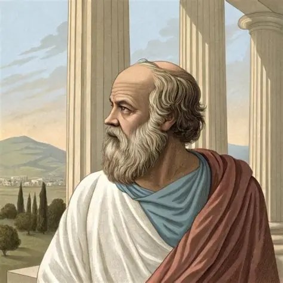

Fue un pensador griego considerado el padre de la filosofía moral. Su método consistía en el diálogo y la pregunta constante, conocido como mayéutica, con el cual buscaba que las personas reflexionaran y llegaran por sí mismas al conocimiento. Su enseñanza principal fue que “una vida sin examen no merece ser vivida”. En la actualidad, sus ideas tienen gran relevancia porque promueven el pensamiento crítico, la autoconciencia y la capacidad de cuestionar lo establecido, algo esencial en la educación, la política y la vida cotidiana.
